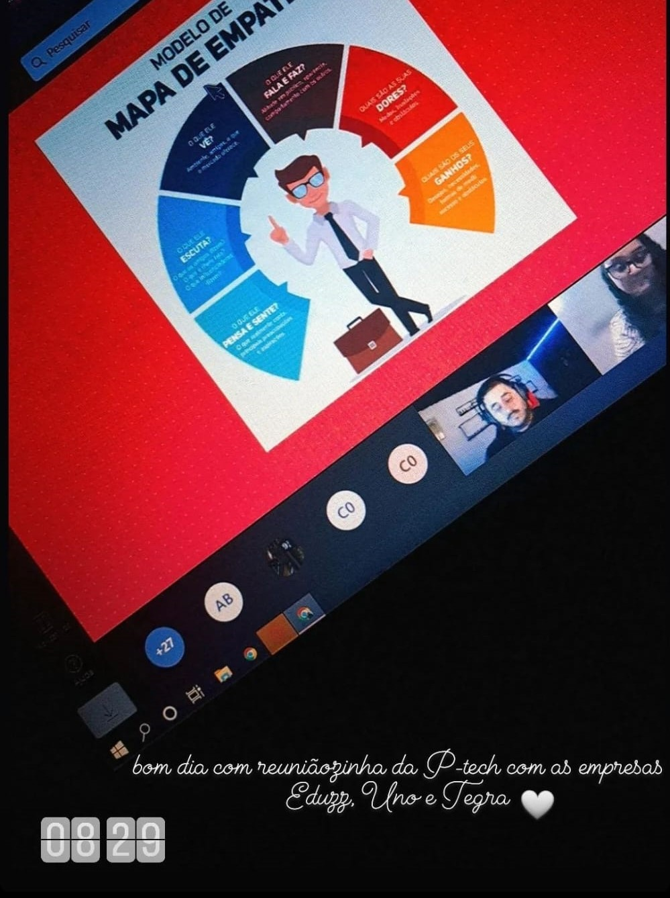
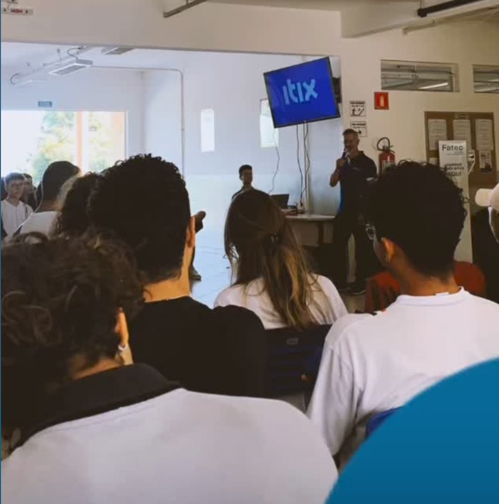
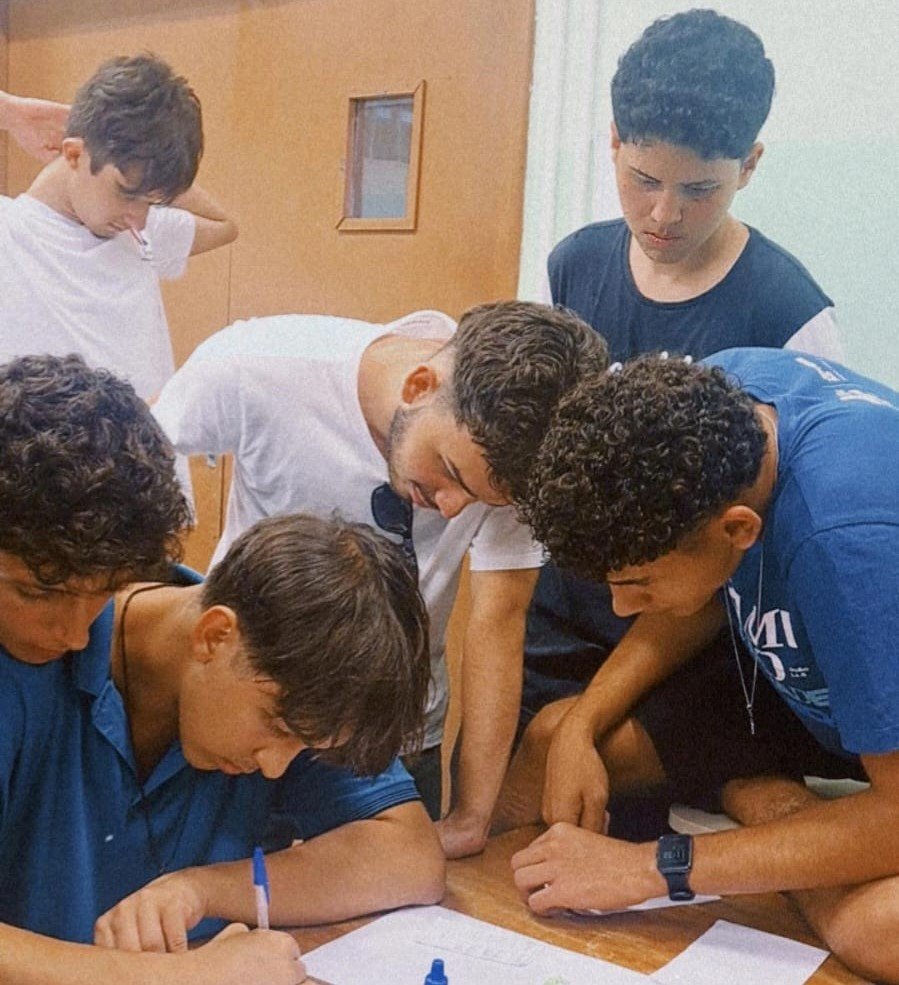
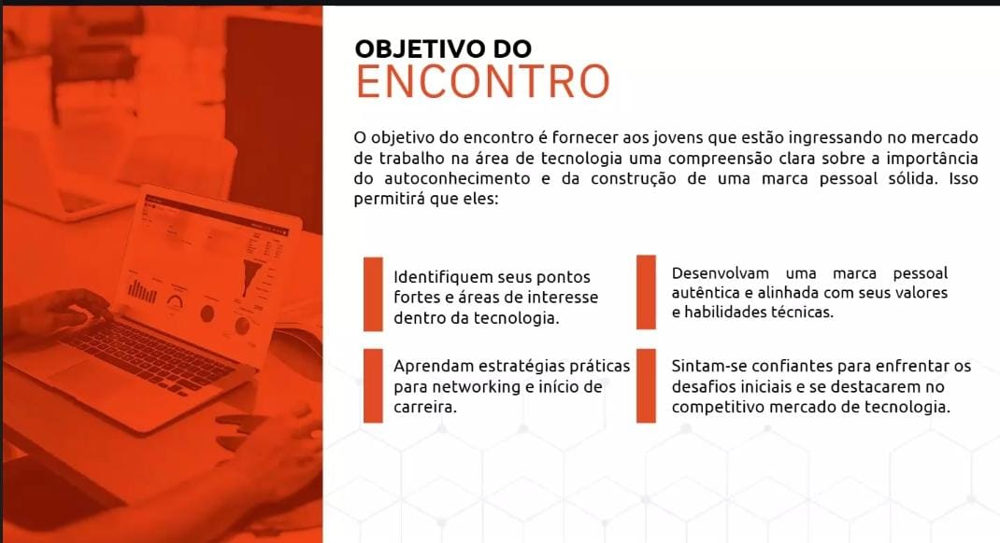

   <!DOCTYPE html>
    <html lang="pt-br">
    <head>
        <meta charset="UTF-8">
        <meta name="viewport" content="width=device-width, initial-scale=1.0">
        <title>Portfólio - PTECH</title>
        <link rel="stylesheet" href="css/bootstrap/bootstrap.min.css">
        <link rel="stylesheet" href="https://cdnjs.cloudflare.com/ajax/libs/font-awesome/6.4.0/css/all.css">
        <link rel="shortcut icon" href="imgs/CAPA.png" type="image/x-icon">
        <link rel="stylesheet" href="css/style/paginainicial.css">
        <script src="https://cdn.jsdelivr.net/npm/bootstrap@5.3.1/dist/js/bootstrap.bundle.min.js"></script>
        <style>
            .profile-section {
                position: absolute;
                top: 20px;
                right: 40px;
                display: flex;
                align-items: center;
            }
            .profile-picture {
                width: 120px;
                height: 120px;
                border-radius: 50%;
                object-fit: cover;
                margin-left: 10px;
            }
            .social-icons {
                font-size: 70px;
                color: #4E0076;
                text-decoration: none;
                margin-right: 5px;
            }
            .social-icons:hover {
                color: #4E0076;
            }
        </style>
    </head>
    <body>
    
    <div class="profile-section">
        <a href="https://www.instagram.com/_moraeskah_/profilecard/?igsh=NW53eHFpcG16dWFz" target="_blank" class="social-icons">
            <i class="fa-brands fa-instagram"></i>
        </a>
        <a href="https://wa.me/13981277069" target="_blank" class="social-icons">
            <i class="fa-brands fa-whatsapp"></i>
        </a>
        
    </div>
    
    </body>
    </html>
    

<section class="explore" id="explore">
    <div class="second-content" id="second-content">
        <div class="content-coffee" id="content-coffee">
            <h1 class="subtitle">PORTIFÓLIO-ACP-PTECH</h1>
            <div class="container text-center">
                <div class="row align-items-center" id="content-options">

                    <div class="col">
                        <i class="fa-solid fa-book" style="color: #4E0076;"></i>
                        <h3>1º ANO</h3>
                        <p><strong>1- No dia 25 de março de 2022, ocorreu uma reunião com as representantes 
                            das empresas Eduzz e Uno. Durante este encontro, foi apresentado o cronograma anual
                             da Ptech, delineando as dinâmicas e atividades planejadas ao longo do ano para a nossa turma.</strong></p>
                        
                        <br><br>
                        <p><strong>2- No dia 19 de abril de 2022, foi realizada uma reunião com as representantes das empresas
                             Eduzz, Uno e Tegra para discutir o tema da "Conduta Ética". Durante o encontro, tivemos a oportunidade
                              de compartilhar nossas perspectivas e visões sobre o assunto, promovendo uma discussão construtiva 
                              sobre a importância da ética empresarial e os valores que orientam nossas práticas e decisões.</strong></p>
                        <br>
                        <p><strong>3- No dia 13 de maio de 2022, ocorreu um encontro com as representantes das empresas Eduzz e Uno. 
                            Durante este evento, foram distribuídos os brindes referentes a uma reunião anterior, infelizmente não documentada,
                             na qual os cinco melhores alunos da atividade foram contemplados com um brinde de cada empresa.</strong></p>
                        
                        <br>
                        <p><strong>4- Em 30 de setembro de 2022, foi realizada uma reunião envolvendo as empresas Eduzz, Uno e Tegra,
                             na qual foi apresentado um tema de significativa importância: A empatia, destacando sua relevância tanto na 
                             esfera pessoal quanto na profissional.</strong></p>
                        
                        <br><br>
                        <p><strong>5- Anteriormente à reunião abordada no primeiro tópico, ocorreu uma outra reunião na 
                            qual nos apresentamos às empresas. Discutimos sobre nossas experiências com tecnologia, 
                            preferências e outros assuntos pertinentes. Senti-me extremamente acolhida, confortável 
                            e entusiasmada para os próximos encontros.</strong></p>
                        
                        <i class="fa-solid fa-book" style="color: #4E0076"></i> <h3>2º ANO</h3>
                        <p><strong>1- No dia 27 de abril de 2023, ocorreu uma reunião com as representantes das empresas Eduzz e Uno.</strong></p>
                        
                        <br><br>
                        <p><strong>2- No dia 04 de maio de 2023, uma palestra foi conduzida pelo dono da empresa Itix, abordando temas relacionados à empresa.</strong></p>
                        
                        <br><br>
                        <p><strong>3- No dia 05 de maio de 2023, uma palestra foi conduzida por uma representante da empresa Itix, abordando detalhadamente os temas
                             relacionados à tecnologia e à inteligência artificial.</strong></p>
                        
                        <br><br>
                        <p><strong>4- No dia 22 de setembro de 2023, realizou-se uma reunião com a representante de uma das empresas para abordar técnicas e dicas
                             sobre como elaborar um currículo de forma eficaz.</strong></p>
                        
                        <br><br>
                        <p><strong>5- No dia 16 de novembro de 2023, tivemos um treinamento com
                             um representante da empresa Itix, onde aplicamos o método Scrum 
                             em um projeto sobre Reciclagem.</strong> </p>
                        
                        <br><br>
                    </div>

                    <div class="col">
                        <i class="fa-solid fa-book" style="color: #4E0076"></i>
                        <h3>3º ANO</h3>
                        <p><strong>1- No dia 08 de abril de 2024, participamos de uma palestra com o representante da empresa Itix, cujo tema central foi
                             "Criatividade e Inovação: Um Desafio Constante".</strong></p>
                        
                        <br><br>
                        <p><strong>2- No dia 23 de maio de 2024, foi realizada uma palestra na Etec Fernando Prestes, ministrada por Guilherme Bastos,
                             da empresa Tegra. O tema abordado foi "As possibilidades da IA no mercado de trabalho".</strong></p>
                        
                        <br><br>
                        <p><strong>3- No dia 27 de maio de 2024, a Eduzz organizou uma palestra online ministrada por Victor Palencia, que abordou o tema 
                            "Liderança e Gestão 3.0".</strong></p>
                        
                        <br><br>
                        <p><strong>4- No dia 18/06, tivemos um bate-papo com os estagiários da Itix, das 08h às 10h. Logo em seguida, assistimos a uma palestra 
                            com o tema: 'Explorando Homelabs: Como criar seu próprio ambiente de desenvolvimento pode transformar sua carreira em TI', 
                            ministrada pelo palestrante Edmilson. </strong></p>
                        
                        <br><br>
                        <p><strong>5- No dia 31/07, assistimos a uma palestra da empresa Eduzz com o tema: 'Hacker do bem e a segurança digital no dia-a-dia', 
                            ministrada pelo palestrante Luiz Milagres.</strong></p>
                        
                        <br><br>
                        <p><strong>6- No dia 28/08, assistimos a uma palestra da empresa Eduzz, com o tema: 'Você é uma pessoa organizada?',
                             ministrada pelos palestrantes Vinicius e Michele.</strong></p>
                        
                        <br><br>
                        <p><strong>7- No dia 29/08, assistimos a uma palestra da empresa Uno com o tema: 'Fluxo de Operações Comercial', ministrada pelos 
                            palestrantes André Lopes e Tamiris Marciano.</strong></p>
                        
                        <br><br>
                        <p><strong>8- No dia 05/09, assistimos a uma palestra da empresa Tegra com o tema: 'Quais as tendências da área de TI com a virada 
                            da IA Generativa e outras tecnologias', ministrada pelo palestrante Guilherme Bastos.</strong></p>
                        
                        <br><br>
                        <p><strong>9- No dia 19/09, assistimos a uma palestra da empresa Uno com o tema: 'Ingressando no mercado de Trabalho - 
                            Autoconhecimento e Marca Pessoal ', ministrada pela palestrante Liliane Pereira .</strong></p>
                        
                        <br><br>
                        <p><strong>10- No dia 24/09, assistimos a uma palestra da empresa Eduzz com o tema: 'Capricho: skill cada vez mais raro no Mercado', 
                            ministrada pelo palestrante Luiz Milagres . </strong></p>
                        
                    </div>

                    <div class="col">
                        <p><strong>11- No dia 10/10, assistimos a uma palestra da empresa Tegra
                            com o tema: 'Desenvolvimento Low Code', 
                            ministrada pelo palestrante Guilherme Bastos . </strong></p>
                        
                        <br>
                        <p><strong>12- No dia 17/10, assistimos a uma palestra da IOCHPE pelo Youtube
                            com o tema: 'Educação', ministrada pela palestrante Flavia Freitas . </strong></p>
                        
                        <br>
                        <p>13- No dia 04/11, assistimos a uma palestra da IOCHPE pelo Youtube
                            com o tema: 'A Revolução da Web3 e a Propriedade Digital', 
                            ministrada pelo palestrante Caio Mattos . (ainda teremos)</strong></p>
                        
                        <br>
                        <p>14- No dia 05/11, tivemos uma palestra/oficina dada pela NearX (ainda teremos)</p>
                        
                    </div>
                </div>
            </div>
        </div>
    </div>
</section>
<br><br>
<section class="explore" id="certificados">
    <div class="second-content" id="second-content">
        <div class="content-coffee" id="content-coffee">
            <h1 class="subtitle">Certificados</h1>
            <div class="container text-center">
                <div class="row align-items-center" id="content-options">
                    <div class="col1">
                        <br>
                        
                        <br>
                        
                        <br>
                        
                        <br>
                        
                        <br>
                        
                        <br>
                        
                        <br>
                        
                        <br>
                        
                        <br>
                        
                        <br>
                        
                        <br>
                        
                        <br><br>
                        
                    </div>
                </div>
            </div>
        </div>
    </div>
</section>

</body>
</html>